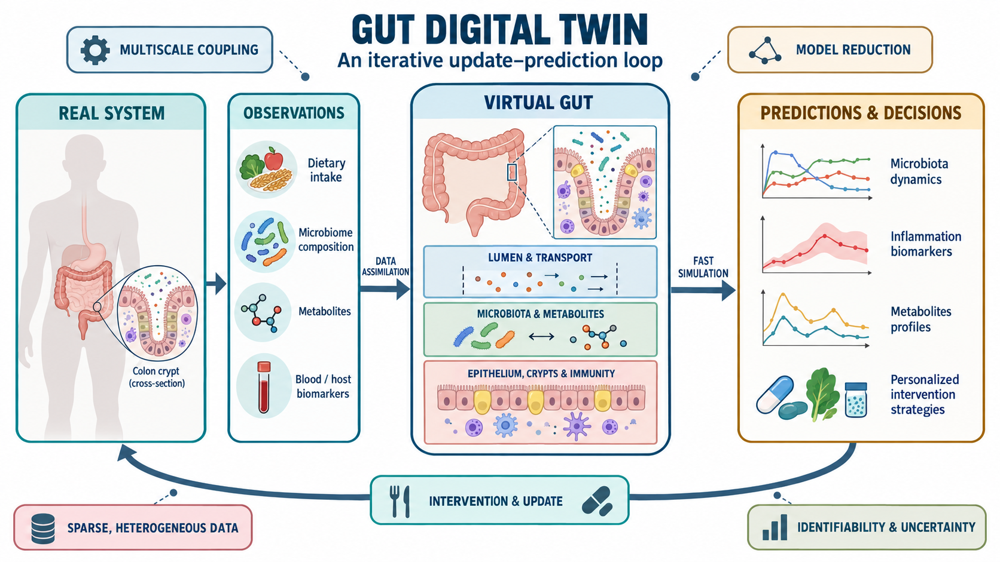

01 · Gut Digital Twin
Host–microbiota dynamics across scales
The gut microbiota is a complex ecosystem shaped by diet, transport, microbial interactions, metabolites and host responses. Continuous human measurements are sparse, which makes mechanistic modelling essential.
The digital twin couples lumen transport, microbial ecology, metabolism, the mucus layer, epithelial crypts and immunity. Data assimilation and model reduction are used to reconstruct individual dynamics and support fast, personalised predictions of dietary, immune or therapeutic interventions.
